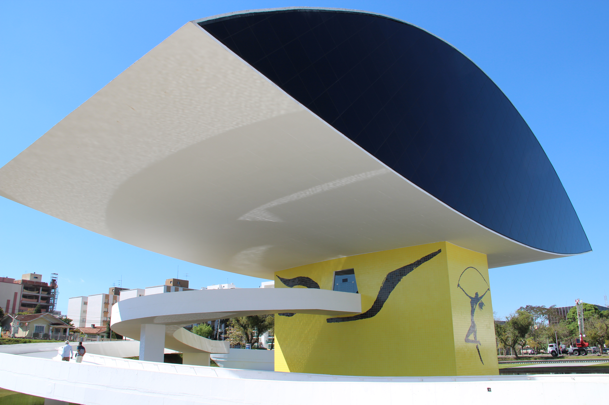
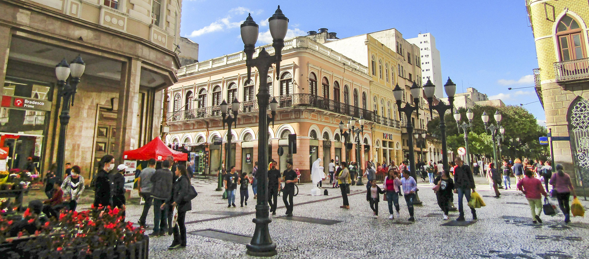

Explore Curitiba no seu ritmo
Parques, museus, mercados e roteiros organizados para você planejar o passeio e salvar os lugares que mais gostou.
Ver atraçõesGaleria da cidade





Por onde começar
Planeje com calma
Todas as páginas funcionam offline. Salve lugares nos favoritos e eles ficam guardados no seu navegador.